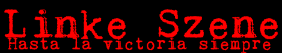

Pressemitteilung
Linke Szene distanziert sich von Gewalttätern.
Hamburg. In Anbetracht der aktuellen Kritik distanziert sich die Linke Szene von den jüngsten gewalttätigen Ausschreitungen.
"Hiermit distanzieren wir uns von den Gewalttätern." sagte Rosa Luxus, Pressesprecher_in der Linken Szene in Deutschland.
Gewalt sei keine Lösung, so Luxus weiter.
Der Dachverband der Linken Szene e.V. i.Gr. vertritt die regionalen und internationalen antikapitalistischen, antirassistischen und gloablisierungskritischen Interessen der Linken Szene in Deutschland.
Die offiziellen Vertreter der Linken Szene werden basisdemokratisch gewählt und vertreten die konsensual getroffenen Entscheidungen der Linken Szene gegenüber dem Schweinesystem. Sie üben als Zeichen gegen die Diktatur der Lohnarbeit ihre Tätigkeit als Ehrenamt aus.
Presseanfragen nimmt die Linke Szene unter presse (at) linke-szene.de entgegen.
Hasta la victoria siempre!